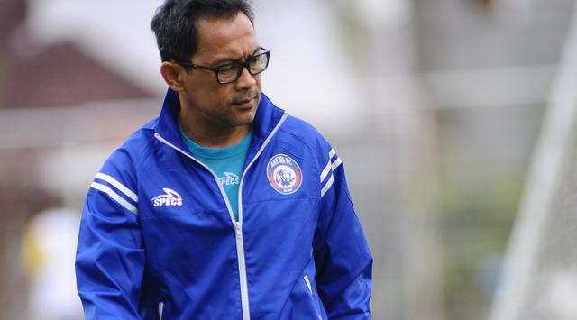

Aji Santoso Batal Mundur

Posisi Aji Santoso sebagai pelatih Arema FC masih aman. Hal ini terbukti setelah tim Singo Edan mengalahkan Bali United 2-0 dalam lanjutan Liga 1 di Stadion Gajayana, Malang, Sabtu (17/6/2017) lalu. Seperti diketahui, laga itu merupakan pertaruhan bagi Aji. Jika gagal menang, dia berjanji akan mengundurkan diri.Setelah kariernya di tim berjulukan Singo Edan itu berlanjut, Aji memberikan sebuah penjelasan terkait kondisi yang sedang dialaminya saat ini. Terutama kepada Aremania yang sempat melakukan tuntutan agar dia mundur setelah mengalami tren negatif sulit menang dan mencetak gol."Saya sudah tegaskan sebelum pertandingan jika manajemen Arema sebenarnya memberikan dukungan penuh kepada saya untuk bertahan. Selain itu, tugas saya di sini adalah membangun tim. Bukan membentuk tim. Artinya jika membangun, tentu butuh fondasi yang kuat. Itu yang sedang dalam proses, sehingga butuh kesabaran," kata mantan pelatih Persela Lamongan ini.Fondasi yang dibuat adalah banyaknya pemain muda di Arema saat ini. Tercatat ada 10 pemain yang masuk kategori U-22. Tidak sedikit pula yang usianya masih 25 tahun. Para pemain itu yang nantinya disiapkan sebagai tulang punggung tim Singo Edan. Arema sudah cukup lama tidak melakukan peremajaan tim. Terakhir perombakan tim dilakukan pada musim 2013. Akan tetapi, waktu itu prinsip manajemen menugaskan pelatih Rahmad Darmawan untuk membentuk tim sehingga mereka tinggal merekrut pemain bintang yang sudah jadi.Kali ini tugas Aji Santoso lebih sulit, karena butuh waktu untuk membuat pemain muda bisa mengeluarkan kemampuan dan menyatu dengan para seniornya. Selain itu, butuh keberanian juga untuk memberikan jam terbang dalam kompetisi. Ditambah lagi, Arema sulit tampil dengan skuat terbaik, karena beberapa pemain jadi langganan Timnas Indonesia.